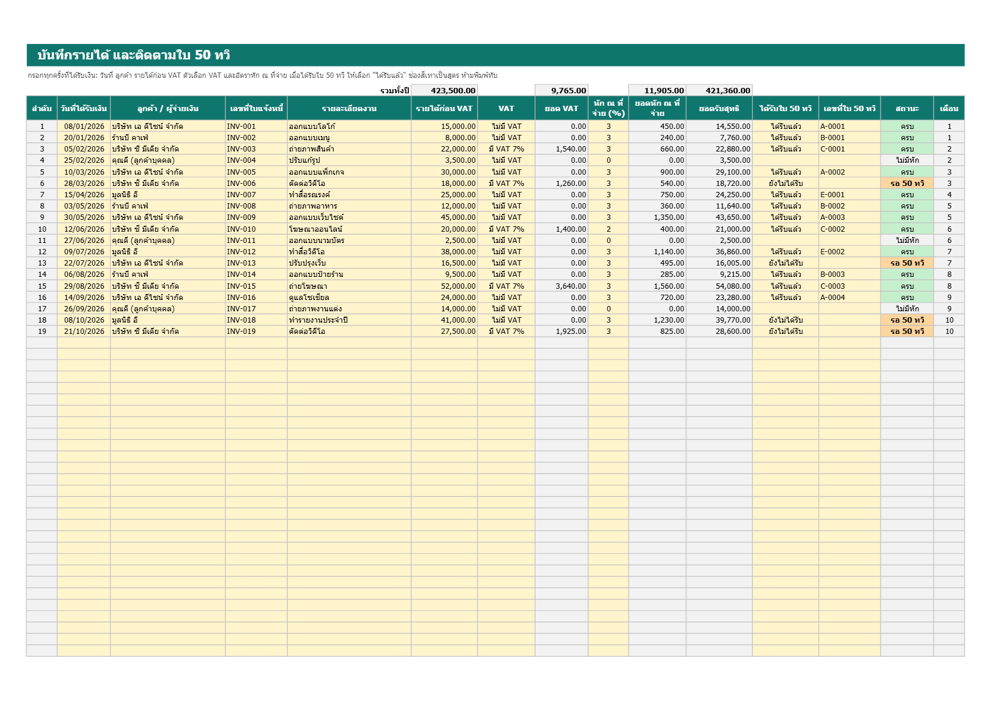
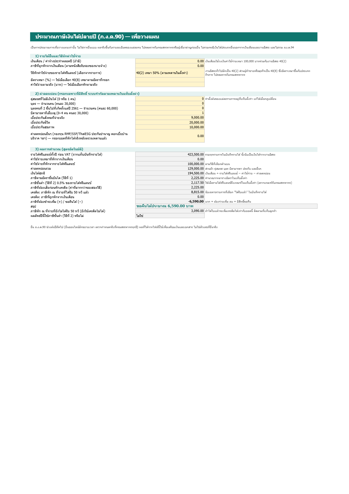

ปลายปีหาใบ 50 ทวิ ไม่ครบ
เสียเครดิตภาษีโดยไม่รู้ตัว
ไฟล์ Excel ไฟล์เดียวสำหรับฟรีแลนซ์ บันทึกรายได้และภาษีที่ลูกค้าหักไว้ ติดตามว่าลูกค้าคนไหนยังไม่ส่งใบ 50 ทวิ และประมาณภาษีปลายปีให้เห็นล่วงหน้า ซื้อครั้งเดียว 199 บาท

ปัญหาที่ชุดนี้แก้
ลูกค้าหักภาษีแล้ว แต่ไม่ส่งใบ
เครดิตภาษีใช้ได้เมื่อมีหนังสือรับรอง 50 ทวิ ชุดนี้ทำเครื่องหมาย "รอ 50 ทวิ" ให้ทุกรายการที่ถูกหักแต่ยังไม่ได้ใบ และสรุปให้ว่าติดค้างกับลูกค้ารายไหน เท่าไรไม่รู้ว่าปีนี้ต้องจ่ายภาษีเท่าไร
กรอกค่าลดหย่อนแล้วดูประมาณการภาษีปลายปี คิดทั้งอัตราขั้นบันไดและภาษีขั้นต่ำ 0.5% แล้วหักเครดิตจากใบ 50 ทวิ ที่ได้รับ ให้เห็นว่าต้องจ่ายเพิ่มหรือขอคืนรายได้ใกล้เกณฑ์ VAT โดยไม่รู้ตัว
ตัวเตือนบอกรายได้สะสมเทียบกับเกณฑ์ 1.8 ล้านบาท เตือนก่อนถึงเกณฑ์ที่ตั้งไว้ (ค่าตั้งต้น 80%)ในไฟล์มีอะไรบ้าง
- บันทึกรายได้ 400 แถว: วันที่ ลูกค้า ใบแจ้งหนี้ รายได้ก่อน VAT ตัวเลือก VAT อัตราหัก ณ ที่จ่าย คิดยอดหักและยอดรับสุทธิให้ เลือกสถานะใบ 50 ทวิ ได้
- ลูกค้า: สรุปรายได้ ภาษีที่ถูกหัก ได้ใบแล้ว และยังไม่ได้ใบ ต่อลูกค้าแต่ละราย (สูงสุด 40 ราย)
- สรุปรายเดือน: รายได้และภาษีหักรายเดือน รายได้สะสม และตัวเตือนเกณฑ์ VAT
- ประมาณภาษี: ค่าใช้จ่ายเหมา ค่าลดหย่อนพื้นฐาน อัตราขั้นบันได ภาษีขั้นต่ำ เครดิต และผลสรุป
- ตั้งค่า: ตารางอัตราและเพดานทุกค่า แก้ได้เมื่อกฎเปลี่ยน
- ที่มาข้อมูล: บอกว่าแต่ละค่ามาจากไหน และตรวจสอบกับกรมสรรพากรแล้วหรือยัง
- ไฟล์ตัวอย่าง: กรอกข้อมูลสมมติไว้ทุกแท็บ เปิดดูวิธีใช้ได้ทันที

ภาพจากไฟล์ตัวอย่างที่ใช้ข้อมูลสมมติ
ข้อมูลอ้างอิงและความโปร่งใส
- ตารางอัตราภาษีขั้นบันไดตรวจกับหน้าของกรมสรรพากรโดยตรง
- เกณฑ์ภาษีขั้นต่ำ ค่าใช้จ่ายเหมา และค่าลดหย่อนบางรายการมาจากแหล่งรอง ไฟล์ระบุไว้ชัดเจนว่าค่าไหนยังไม่ได้ยืนยันกับกรมสรรพากร และแก้ได้ในแท็บตั้งค่า
- เราเปิดไฟล์ใน Microsoft Excel (เวอร์ชัน 16) แล้วป้อนกรณีสุ่มหลายสิบกรณี เทียบทุกช่องกับตัวคำนวณที่เขียนแยกต่างหาก ผลตรงกัน ทดสอบกับ Excel รุ่นเดียว ยังไม่ได้ทดสอบ Google Sheets หรือโปรแกรมอื่น
ไม่เหมาะกับใคร
- คนที่มีเงินได้ประเภทอื่นซับซ้อน เช่น เงินปันผล ค่าเช่า การขายอสังหาริมทรัพย์ (ไฟล์รองรับเฉพาะเงินเดือนและงานอิสระ)
- คนที่ต้องการให้ระบบยื่นแบบให้อัตโนมัติ ไฟล์นี้ประมาณการเพื่อวางแผน ไม่ใช่การยื่นแบบ
- คนที่ไม่ใช้ Excel
ชุดเครื่องมือภาษีฟรีแลนซ์ 199 บาท ซื้อครั้งเดียว ไม่มีรายเดือน ข้อมูลอยู่ในไฟล์ในเครื่องคุณ
คำถามที่พบบ่อย
ใช้แทนนักบัญชีได้ไหม
ไม่ได้ ไฟล์นี้ช่วยเก็บข้อมูลและประมาณการ ตัวเลขที่ยื่นจริงควรตรวจกับกรมสรรพากรหรือผู้เชี่ยวชาญ
ใช้กับ BahtDoc ได้ไหม
ได้ ใบแจ้งหนี้ที่ทำจาก BahtDoc มียอดก่อน VAT และยอดหัก ณ ที่จ่ายที่นำมาลงบันทึกรายได้ได้ทันที
ค่าตั้งต้นล้าสมัยไหม
ตรวจล่าสุด 30 ต.ค. 2569 ถ้ากฎเปลี่ยน แก้ค่าได้ที่แท็บตั้งค่า